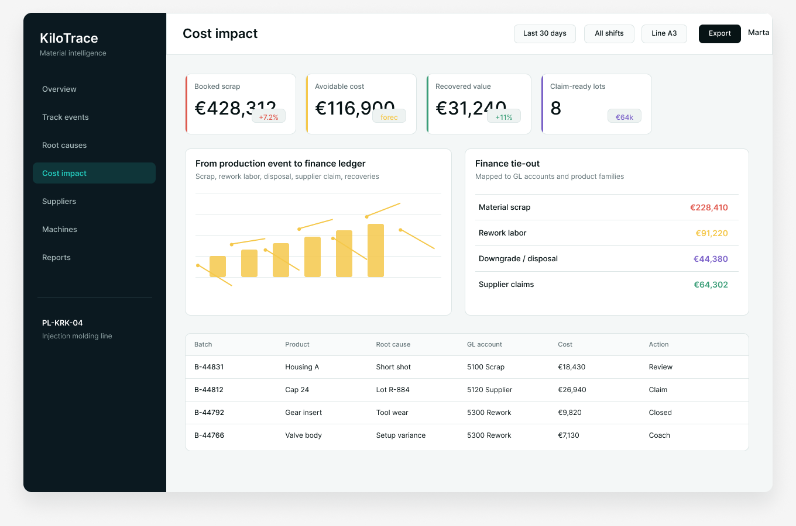

GL account tie-out
Map scrap, rework, disposal, recoveries, and supplier claims to the financial categories leadership already uses.
Cost ties production evidence to GL accounts, supplier exposure, rework labor, recoveries, claim-ready lots, and avoidable cost forecasts.

Cost control
Cost is for plant controllers, operations leaders, procurement, and quality teams who need loss data to move beyond month-end visibility into action and recovery.
Map scrap, rework, disposal, recoveries, and supplier claims to the financial categories leadership already uses.
Track avoidable cost, recovered value, claim-ready lots, and open commercial actions in one place.
Estimate likely monthly loss from active event patterns before it surprises finance at close.
Use cases
Show why scrap changed, where it came from, and what action is expected next.
Package batch evidence, lot exposure, defect records, and cost impact into a claim-ready trail.
Prioritize the loss-reduction projects that have the strongest financial return.
Cost works best when leaders can see the loss but cannot yet see the production story behind it.